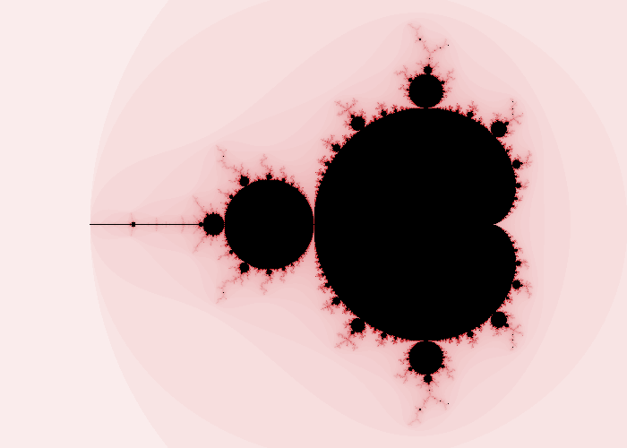

| Integrante | Responsabilidade técnica (seção 3 das orientações) |
|---|---|
| João Otavio Troiano Segoria | 1. Baseline e Perfilamento · 3. Versão MPI (memória distribuída) |
| Bruno Nóbrega Souza | 2. Versão OpenMP (memória compartilhada) · medições, gráficos e documentação |
O grupo tem dois integrantes, por isso o João acumula duas frentes. O problema escolhido é o nº 3 da lista, o Conjunto de Mandelbrot, cujo aspecto interessante é o desbalanceamento natural de carga: pixels vizinhos podem custar de 1 a 1000 iterações, o que torna a forma de dividir o trabalho a decisão mais importante da paralelização.
Um número complexo tem a forma z = a + b·i, com i² = −1; ele é um ponto do plano (eixo horizontal = parte real, eixo vertical = parte imaginária) e seu módulo é |z| = √(a² + b²). O Conjunto de Mandelbrot é o conjunto dos números complexos c para os quais a sequência z0 = 0, zn+1 = zn² + c permanece limitada. Se em algum passo |z| > 2, está provado que a sequência diverge (o ponto "escapou" e não pertence ao conjunto).
O código 03_mandelbrot.cpp faz isso para cada pixel de uma imagem W×H:
cr = −2,5 + 3,5·x/W e ci = −1,25 + 2,5·y/H
— ou seja, a imagem cobre a janela [−2,5; 1,0) × [−1,25; 1,25) do plano complexo;double);zr² + zi² > 4 (equivale a |z| > 2, sem calcular raiz quadrada) ou quando chega a
MAXIT = 1000 iterações (o ponto é tratado como pertencente ao conjunto);hist[y·W + x] e imprime o checksum, a soma de todas as
iterações. Para uma mesma entrada o checksum é sempre o mesmo: é o gabarito que as versões paralelas terão que reproduzir.
para y de 0 a H-1: // linhas da imagem
para x de 0 a W-1: // pixels da linha
c = ponto do plano que o pixel (x, y) representa
z = 0; it = 0
enquanto |z|² <= 4 e it < 1000: z = z² + c; it++
hist[y*W + x] = it
checksum = soma de hist[] // validação
Tempo: O(W · H · MAXIT) no pior caso — cada um dos W·H pixels faz no máximo MAXIT iterações, e cada iteração custa
O(1) (algumas multiplicações e somas). Memória: O(W · H) — o vetor hist com um long (8 bytes) por
pixel: 32 MB para 2000×2000. Na prática o custo é W·H·(média de iterações): na imagem 2000×2000 a média é
177,5 iterações por pixel, e 17,3% dos pixels chegam ao limite de 1000. O tempo cresce
linearmente com o número de pixels (seção 4). Não há dependência entre pixels: cada um usa só o seu próprio c.
Isso torna o problema "embaraçosamente paralelo" — mas não uniforme, porque o custo de cada pixel é muito diferente.
Para saber onde o tempo é gasto, o mesmo cálculo foi instrumentado em sequencial/mandelbrot_perfil.cpp (mesmas
expressões do baseline, sem alterar a lógica): cronometramos cada trecho do programa e também cada linha da imagem.
Imagem 2000×2000, na máquina descrita na seção 4.
| Trecho do programa | tempo (s) | % do total |
|---|---|---|
| alocar e zerar o vetor (serial) | 0,009044 | 0,390% |
| cálculo dos pixels (HOTSPOT) | 2,306694 | 99,52% |
| soma do checksum | 0,002040 | 0,088% |
| saída (printf) | 0,000024 | 0,001% |
| Total | 2,317802 | 100% |
Tempo por linha: mínimo 0,008 ms, médio 1,153 ms, máximo 4,159 ms — a linha mais cara custa 523× a mais barata.
| Faixa de linhas | % do cálculo | carga |
|---|---|---|
| 0–199 | 0,10% | |
| 200–399 | 1,21% | |
| 400–599 | 7,54% | |
| 600–799 | 16,39% | |
| 800–999 | 24,81% | |
| 1000–1199 | 24,85% | |
| 1200–1399 | 16,25% | |
| 1400–1599 | 7,53% | |
| 1600–1799 | 1,20% | |
| 1800–1999 | 0,10% |
Hotspot: o laço duplo que calcula os pixels concentra 99,52% do tempo; todo o resto é desprezível. Dentro dele, o custo é muito desigual: as linhas do centro da imagem atravessam o conjunto (muitos pixels chegam a 1000 iterações), enquanto as linhas das bordas escapam quase imediatamente. As faixas centrais 800–1199 (20% das linhas) concentram 49,7% do tempo de cálculo. A imagem é simétrica em relação ao eixo real (o conjugado de um ponto do conjunto também pertence a ele), por isso o perfil é espelhado entre a metade de cima e a de baixo.
Metodologia. Código do professor sem nenhuma alteração, compilado com g++ -O2, como pede o README dos
baselines. Para cada tamanho: 1 execução de aquecimento descartada (carrega programa, bibliotecas e cache) e
3 execuções medidas; registramos a mediana, que não é puxada por uma execução atrapalhada pelo sistema
operacional. O tempo é o que o próprio programa imprime: só o cálculo, medido com relógio monotônico
(CLOCK_MONOTONIC). Tudo é automatizado pelo script scripts/medir.sh, que grava o CSV
resultados/medicoes.csv e confere o checksum de cada execução.
Máquina: notebook Intel Core i5-9300H @ 2.40GHz — 4 núcleos físicos e 8 lógicos (hyper-threading), 15,4 GB de RAM; ambiente da disciplina em contêiner
(imagem iesb/pp-lab:2026.2, Ubuntu 24.04, g++ 13.3.0, Open MPI 4.1.6), executado com podman no Linux.
| Imagem (W×H) | pixels | tempo mediano (s) | mín – máx (s) | checksum | ns por pixel |
|---|---|---|---|---|---|
| 1000×1000 | 1.000.000 | 0,5796 | 0,5783 – 0,5819 | 177.507.041 | 580 |
| 1414×1414 | 1.999.396 | 1,1541 | 1,1509 – 1,1604 | 354.843.131 | 577 |
| 2000×2000 | 4.000.000 | 2,3084 | 2,3019 – 2,3205 | 709.817.858 | 577 |
| 2828×2828 | 7.997.584 | 4,6213 | 4,6121 – 4,6487 | 1.419.033.317 | 578 |
| 4000×4000 | 16.000.000 | 9,2331 | 9,2172 – 9,2566 | 2.838.911.356 | 577 |
O tempo por pixel é praticamente constante, ou seja, o tempo cresce linearmente com W·H, como prevê a complexidade (a janela do plano é sempre a mesma, então a média de iterações por pixel quase não muda com a resolução). A variação entre as 3 medidas ficou abaixo de 1%. O tamanho de referência para os experimentos de speedup será 2000×2000 (≈ 2,31 s): grande o bastante para que os overheads de threads e de comunicação não dominem a medida.
Consideramos serial tudo o que não é o cálculo dos pixels (alocar e zerar o vetor, somar o checksum, imprimir): f = (total − cálculo) / total = 0,48%, portanto a fração paralelizável é 99,52%. Pela Lei de Amdahl, S(p) = 1 / (f + (1 − f)/p):
| p (threads ou processos) | 2 | 4 | 8 | 16 | p → ∞ |
|---|---|---|---|---|---|
| speedup máximo de Amdahl | 1,99 | 3,94 | 7,74 | 14,93 | 209 |
| teto se dividirmos em blocos contíguos de linhas | 2,00 | 2,12 | 3,41 | 6,17 | — |
Amdahl só enxerga a parte serial e supõe que a parte paralela se divide igualmente. Neste problema isso não acontece: a segunda linha da tabela, calculada com o tempo medido de cada linha, mostra o speedup máximo se cada unidade recebesse um bloco contíguo de H/p linhas — o tempo paralelo passa a ser o do bloco mais caro. Com 4 unidades, as duas do meio ficam com quase todo o trabalho e o teto cai de 3,94 para 2,12. Com 2 unidades o bloco funciona bem por causa da simetria da imagem. Conclusão: o limite prático aqui não é a fração serial, e sim o desbalanceamento de carga; o plano abaixo é desenhado para atacá-lo. A máquina tem 4 núcleos físicos: além disso, o ganho depende do hyper-threading (núcleos lógicos), que não dobra o desempenho.
#pragma omp parallel for) sobre as linhas da imagem. As linhas são
independentes e todas as threads enxergam o mesmo vetor hist. Não usaremos sections (não há
blocos de código diferentes) nem tasks (não há divisão e conquista). A linha é a unidade porque cada thread
escreve um trecho contíguo e grande da memória, o que evita false sharing.reduction(+:soma) — cópia privada por thread, somadas
no fim — e vamos medir também critical e atomic para justificar a escolha.schedule(static) fique perto do teto em
blocos e que schedule(dynamic, 1) (fila de linhas: quem termina pega a próxima) se aproxime do ideal. Vamos
comparar static, dynamic e guided com 1, 2, 4, 8 e 16 threads.MPI_Bcast dos parâmetros (W, H, modo) a partir do rank 0;
MPI_Gatherv para juntar as linhas no rank 0 (o "v" porque cada rank pode ter um número diferente de linhas);
MPI_Reduce com MPI_SUM para o checksum e com MPI_MAX para o tempo (o programa só
termina quando o rank mais lento termina).Toda execução paralela terá o checksum comparado com o do baseline do mesmo tamanho (e, no OpenMP, a imagem pixel a pixel).
Para garantir resultados idênticos, os programas serão compilados com -ffp-contract=off, impedindo que o compilador
funda multiplicação e soma (FMA) e mude o arredondamento. Mediremos escalabilidade forte (imagem fixa 2000×2000, variando
threads/processos) e fraca (~1 milhão de pixels por unidade: lado = 1000·√p), com o mesmo protocolo da seção 4, e
compararemos speedup e eficiência com as previsões desta seção.